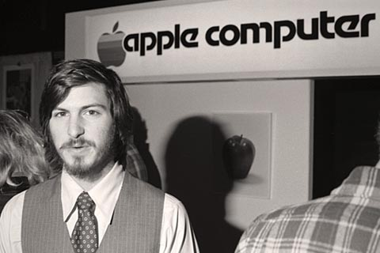

Chương 8

pple II đã đưa công ty từ việc hoạt động nhỏ lẻ trong nhà để xe của Jobs lên đỉnh cao mới của ngành công nghiệp. Doanh số tăng trưởng ngoạn mục, từ 2.500 chiếc máy tính năm 1977 lên 210.000 chiếc vào năm 1981. Jobs đã làm việc không ngừng nghỉ, ông biết rằng Apple II không thể thành công mãi mãi, và cho dù đã bỏ nhiều công sức để sản xuất và trình bày nó, từ dây nguồn đến thùng máy tính, tất cả các sản phẩm tung ra đều được coi là kiệt tác của Wozniak. ông cần sản phẩm của chính mình. Hơn nữa, ông muốn một sản phẩm, mà theo lời ông, sẽ làm chấn động toàn cầu.

Ảnh chụp năm 1977 khi Jobs giới thiệu về công ty Apple
Ban đầu, Jobs hy vọng rằng Apple III sẽ thực hiện được sứ mệnh đó. Nó sẽ có dung lượng bộ nhớ lớn hơn, màn hình sẽ hiển thị tám mươi ký tự trên một hàng ngang thay vì bốn mươi ký tự, và sẽ giải quyết được vấn đề liên quan đến chữ viết hoa và viết thường. Ấp ủ niềm đam mê thiết kế công nghiệp, Jobs ấn định kích cỡ và hình dạng của vỏ máy. Bất kỳ ai có ý định thay đổi đều bị ông từ chối, ngay cả việc các nhóm kỹ sư muốn bổ sung các chi tiết vào bảng vi mạch. Kết quả là các bảng mạch thành phần có bộ nối kém và thường xuyên bị hỏng. Khi Apple bắt đầu được bán vào tháng Năm năm 1980, nó đã thất bại. Randy Wigginton, một trong những kỹ sư của Apple đã kết luận rằng, “Dòng máy tính Apple III ra đời giống như một đứa trẻ được sinh ra sau những cuộc truy hoan, khi mà tất cả mọi người đều không còn đủ tỉnh táo nhận thức. Và đứa trẻ bị coi là đứa con hoang mà ai cũng phủ nhận: ‟Nó không phải là con tôi‟.” Sau đó, Jobs tách mình khỏi Apple III và giận dữ bỏ đi với mong muốn tìm cách sản xuất ra một thứ gì đó hoàn toàn khác biệt.
Đầu tiên, ông thích thú với ý tưởng về thiết bị màn hình cảm ứng nhưng ròi lại thấy nản chí.
Trong một buổi trình diễn công nghệ, Jobs đến muộn, ông ngồi không yên một lúc rồi quyết định ngắt giữa chừng bài thuyết trình của nhóm kỹ sư với một câu nói có phần lỗ mãng: “Cảm ơn”. Họ cảm thấy bối rối và hỏi, “Có phải ông muốn chúng tôi rời khỏi đây?”. Jobs nói đúng là như thế, sau đó quay sang mắng mỏ những đồng nghiệp của mình rằng đừng có lãng phí thời gian của ông như vậy.
Sau đó, ông và Apple đã tuyển dụng hai kỹ sư từ Hewlett-Packard để “thai nghén” ra một dòng máy vi tính hoàn toàn mới. Cái tên mà Jobs chọn cho dòng máy này có thể khiến cho ngay cả một vị bác sĩ tâm thần học trong trang thái mệt mỏi nhất cũng phải ngạc nhiên và đọc đi đọc lại để kiểm chứng. Đó là “Lisa”. Tất cả các máy tính khác đều được đặt theo tên của con gái người thiết kế, nhưng Lisa là cô con gái mà Jobs đã bỏ rơi và thậm chí còn chưa hoàn toàn thừa nhận là con gái ông. Andrea Cunningham, một nhân viên của hang Regis McKenna đang phụ trách mảng quan hệ công chúng của dự án này thì nói rằng “Có thể ông ấy làm như vậy vì cảm thấy có lỗi. Chúng ta phải tìm một cụm từ mà khi viết tắt những chữ cái đầu của cụm từ này phải ra chữ Lisa. Như vậy, chúng ta có thể khẳng định rằng dòng máy tính này không phải được đặt theo tên của cô bé Lisa”.
Và cụm từ được cho là phù hợp nhất với đặc tính của chiếc máy vi tính này là “Local integrated systems architecture” (cấu trúc hệ thống tích hợp nội bộ). Mặc dù vô nghĩa nhưng cụm từ này được coi là lời giải thích chính thức cho cái tên Lisa. Trong giới kỹ sư, họ thường cho rằng Lisa là viết tắt của “Lisa: invented stupid acronym” (Lisa là một cụm từ viết tắt những chữ cái đầu ngu xuẩn nhất được nghĩ ra). Nhiều năm sau, khi tôi hỏi Jobs về cái tên, ông nhanh chóng thừa nhận rằng:
“Hiển nhiên tôi đã đặt nó theo tên của con gái tôi.”
Dòng máy tính Lisa được định giá 2.000 đô-la/chiếc vì có bộ vi xử lý 16 bit thay vì 8 bit như ở Apple II. Không có “ma thuật” của Wozniak, người vẫn đang âm thầm làm việc trên Apple II, nhóm kỹ sư đã chế tạo một chiếc máy tính đơn giản với màn hình hiển thị ký tự văn bản truyền thống, không có khả năng tăng cường bộ vi xử ý mạnh để chạy được những ứng dụng thú vị. Jobs bắt đầu mất kiên nhẫn với sự nhàm chán này.
Tuy nhiên, một lập trình viên đã truyền cho dự án này chút sức sống, đó là Bill Atkinson, ông ấy là một nghiên cứu sinh ngành khoa học thần kinh, người cũng đã từng sử dụng chất kích thích. Khi được mời đến làm việc cho Apple, ông ấy đã từ chối. Nhưng sau đó, khi Apple gửi cho ông chiếc vé máy bay không hoàn lại tiền thì ông quyết định sử dụng nó và cho Jobs cơ hội thuyết phục ông. Trong một cuộc nói chuyện dài ba tiếng đồng hồ, Jobs nói: “Chúng tôi đang kiến tạo tương lai. Hãy thử tưởng tượng anh đang lướt ngay trước mũi những con sóng lớn. Cảm giác đó thật phấn chấn biết bao. Còn giờ, hãy tưởng tượng anh đang bơi chó ở cuối con sóng đó, thì tất nhiên là chẳng có gì thú vị để nói cả. Vì vậy, hãy làm việc với chúng tôi và chúng ta sẽ cùng chinh phục thế giới.” Và Atkinson đã đồng ý ở lại.
Với mái tóc bờm xờm và bộ râu rủ, Atkinson trông rất sống động và hài hước. Ông có một chút sự tài tình, khéo léo của Woz lẫn khát khao chế tạo ra những sản phẩm tuyệt diệu của Jobs.
Nhiệm vụ đầu tiên của Atkinson là lập trình một ứng dụng để theo dõi một danh mục đầu tư chứng khoán bằng cách truy vấn tự động vào hệ thống dịch vụ của Dow Jones, lấy bảng giá cổ phiếu niêm yết và trả lại kết quả. “Tôi phải viết ứng dụng đó thật nhanh bởi vì có một bài quảng cáo về Apple II trên tạp chí đã đưa ra hình ảnh một ông chồng đang đứng ở bàn ăn trong bếp nhìn màn hình Apple, lúc đó đang hiển thị bảng niêm yết giá cổ phiếu.
Và cô vợ thì đang tươi cười rạng rỡ với anh ta. Nhưng chương trình đó trên thực tế chưa có, vì vậy, tôi cần viết nó.”
Sau đó, Atkinson đã chế tạo phiên bản lập trình bằng ngôn ngữ Pascal, một ngôn ngữ cao cấp hơn cho Apple II. Jobs phản đối điều này vì cho rằng BASIC là tất cả những gì Apple II cần, nhưng ông cũng cho Atkinson cơ hội: “Vì thấy anh rất tha thiết với việc này nên anh cho ông sáu ngày để chứng minh là tôi đã sai”. Atkinson đã làm được và sau đó Jobs đã rất coi trọng ông.
Tính đến mùa thu năm 1979 thì Apple đang “gây giống” ba chú ngựa để kế nhiệm sự thành công của Apple II. Trong đó có dòng Apple III yểu mệnh và dự án dòng máy tính Lisa, một kế hoạch đã sớm làm Jobs thất vọng. Và đâu đó ngoài tầm quan sát của Jobs, ít nhất là trong lúc đó, có một dự án chìm đang được một nhân viên đa tính cách tên là Jef Raskin, vị giáo sư đã từng giảng dạy Bill Atkinson thực hiện. Dự Ấn này hướng tới dòng máy tính giá rẻ, phục vụ số đông giống như các thiết bị gia đình; tất cả đều được khép kín trong một thiết bị, bao gồm màn hình, bàn phím, hệ thống vận hành, phần mềm và có một giao diện thiết kế đồ họa đẹp mắt. ông cố gắng hướng sự chú ý của tất cả các đồng nghiệp ở Apple sang một trung tâm nghiên cứu mang tính đột phá ở ngay Palo Alto, nơi đã mở đường cho những ý tưởng như thế này.
Xerox PARC
Trung tâm nghiên cứu Palo Alto của tập đoàn Xerox, viết tắt là Xerox PARC, được thành lập năm 1970 với mục đích là tạo ra sân chơi lớn cho những ý tưởng số. Với mong muốn tạo điều kiện tốt hơn hoặc cũng có thể là tệ hơn, trung tâm này được đặt an toàn ở một nơi tránh xa những áp lực về tiền bạc của trụ sở Xerox ở Connecticut cách đó hơn 4.800 km. Trong số các nhà chiến lược của Xerox phải kể đến nhà khoa học Alan Kay, người có hai câu châm ngôn mà Jobs rất tâm đắc là: “Cách tốt nhất để dự đoán tương lai là hãy tạo ra nó” và “Những ai nghiêm túc với việc viết phần mềm thì nên tự chế tạo ra thiết bị phần cứng của chính mình.” Kay có ý tưởng phát triển một chiếc máy vi tính cá nhân nhỏ gọn có cái tên mỹ miều là “Dynabook” mà một đứa trẻ cũng có thể sử dụng dễ dàng. Vì vậy, các kỹ sư của trung tâm Xerox PARC đã bắt đầu thiết kế một hệ kiến trúc đồ họa có giao diện thân thiện đối với người sử dụng bằng việc thay thế tất cả dòng lệnh DOS khiến cho màn hình máy tính trở nên thật đáng sợ. Màn hình máy tính sẽ hiển thị được nhiều dạng văn bản cũng như tệp dữ liệu một lúc. Và bạn có thể sử dụng chuột máy tính để định vị và chọn dữ liệu mình muốn.
Giao diện người dùng đồ họa (graphical user interface - GUI, phát âm là “gooey”) được đơn giản hóa bằng một khái niệm mới do các kỹ sư ở Xerox ARC phát minh, có tên là kỹ thuật ảnh nhị phân (bitmapping). Cho đến nay, hầu hết các máy tính đều sử dụng công nghệ này. Khi bạn gõ một ký tự trên bàn phím, máy tính của bạn sẽ phát những ký tự đó trên màn hình, thông thường là dưới dạng những đốm sáng có màu xanh của chất lân tinh (phốt pho) trên nền tối. Do có giới hạn số lượng ký tự, con số và biểu tượng sử dụng nên máy tính sẽ không mất quá nhiều thời gian để viết lệnh mã hóa và xử lý để cho ra kết quả cuối cùng. Trong hệ thống kỹ thuật ảnh nhị phân, mỗi một pixel trên màn hình được điều khiển bởi hệ thống dãy số nhị phân (bit) trong bộ nhớ máy tính.
Để đáp lại lệnh và hiển thị ra ký tự trên màn hình máy tính, nhiệm vụ của máy tính là định nghĩa từng pixel một là điểm sáng hay điểm tối, đối với màn hình màu thì sẽ có màu gì. Việc này có thể tốn khá nhiều công sức nhưng cho phép đa dạng hình ảnh đồ họa, kiểu phông chữ và chế độ hiển thị màn hình đẹp đáng ngạc nhiên.
Giao diện đồ họa và công nghệ ảnh nhị phân đã trở thành những đặc tính đáng chú ý của dòng máy tính nguyên mẫu của Xerox, giống như chiếc máy Alto cùng với ngôn ngữ lập trình định hướng đối tượng của nó tên là Smalltalk. Jef Raskin cho rằng đó là những đặc điểm nổi bật của dòng máy tính tương lai. Vì vậy, ông ấy đã thúc giục Jobs và những người đồng nghiệp của mình ở Apple đến tham quan và tìm hiểu Xerox PARC.
Raskin gặp phải khó khăn là Jobs coi ông như một nhà lý luận không thể chịu đựng nổi, hay sử dụng chính xác từ của Jobs là “một tên đầu đất khó ưa”. Vì vậy Raskin đã nhờ Atkinson, người đứng ở đầu bên kia của chiến tuyến trong ranh giới định nghĩa về một tên đầu đất và một thiên tài của Jobs, cố gắng thuyết phục Jobs chú ý tới những gì đang xảy ra ở Xerox PARC. Nhưng Raskin không biết rằng Jobs đang nghiên cứu một thương vụ lớn hơn nhiều. Quỹ đầu tư mạo hiểm của Xerox muốn tham gia vào việc phân chia cổ phần và nâng vốn lần hai của Apple vào mùa hè năm 1979. Jobs đã đề nghị: “Chúng tôi sẽ cho phép phía công ty ông đầu tư 1 triệu đô-la vào Apple nếu ông chia sẻ dữ liệu nghiên cứu mà các ông có được ở PARC.” Và Xerox đã chấp nhận chuyển giao cho Apple công nghệ mới của họ và ngược lại, mua 100.000 cổ phần của Apple với giá 10 đô-la/cổ phiếu.
Vào thời điểm Apple cổ phần hóa một năm sau đó, số cổ phần mà Xerox mua với giá 1 triệu đô-la trước đó đã có giá trị 17,6 triệu đô-la. Nhưng Apple là người được lợi hơn trong thương vụ trao đổi này. Jobs và đồng nghiệp của mình đã đến tham quan công nghệ của Xerox PARC vào tháng 12 năm 1979 để xem họ trình diễn một cách đầy đủ hơn về công nghệ của họ. Larry Tesler là một trong số những nhà khoa học ở Xerox phụ trách thuyết trình về công nghệ cho các vị khách quý. ông hòi hộp khi trình bày về công trình mà những người chủ của ông thậm chí chưa bao giờ đánh giá cao nó.
Người có trách nhiệm thuyết trình khác, Adele Goldberg, lại lo sợ rằng công ty của bà dường như đang sẵn sàng cho đi thứ báu vật quý giá nhất. “Việc này thật là ngu xuẩn, hoàn toàn ngu xuẩn và tôi cố gắng tìm mọi cách để Jobs biết được ít nhất có thể”, bà nói.
Goldberg có cách của mình trong buổi giới thiệu tóm tắt đầu tiên. Jobs, Raskin và trưởng nhóm phát triển Lisa - John Couch được dẫn tới sảnh chính, nơi Xerox Alto đã được xếp sẵn ở đó.
Goldberg kể rằng, “Đó là một buổi trình diễn nằm trong tầm kiểm soát. Chúng tôi chỉ giới thiệu của một vài ứng dụng, chủ yếu là ứng dụng xử lý văn bản.” Jobs không hài lòng nên ông gọi điện thẳng đến trụ sở của Xerox yêu cầu được giới thiệu nhiều hơn nữa.
Và Jobs được mời quay lại Xerox vài ngày sau đó. Lần này, ông mang theo một “đội quân” đông đảo hơn nhiều, bao gồm cả Bill Atkinson và Bruce Horn, một lập trình viên của Apple, người đã từng làm việc tại Xerox PARC. Họ đều biết mình đang tìm kiếm cái gì. Goldberg kể, “Khi đến công ty, tôi nghe thấy có rất nhiều tiếng ồn và tôi được thông báo rằng Jobs cùng rất nhiều lập trình viên của ông đang ở trong phòng hội nghị.” Một trong những kỹ sư của Goldberg lúc đó đang cố gắng giúp họ giải trí với màn trình diễn sâu hơn về chương trình xử lý văn bản. Nhưng Jobs càng ngày càng mất bình tĩnh, ông hét lớn: “Hãy dừng việc diễn cái trò vớ vẩn này lại ngay!” Và một số nhân viên của Xerox túm tụm lại trao đổi với nhau và quyết định cởi mở hơn một chút nữa nhưng thật chậm rãi. Họ thỏa thuận rằng Tesler có thể trình bày về Smalltalk, một ngôn ngữ lập trình của Xerox nhưng chỉ là bản chưa được phân loại. Người đội trưởng nói với Goldberg rằng, “Nó sẽ lòe được Jobs vì ông ta chẳng bao giờ biết được rằng đây không phải là bản chính thức.” Nhưng họ đã mắc phải sai lầm lớn. Atkinson và những người khác đã nghiên cứu kỹ những tài liệu công bố của Xerox PARC nên họ có thể biết chính xác là phiên bản họ đang được trình diễn không phải là phiên bản đầy đủ như được miêu tả. Jobs gọi điện ngay cho giám đốc của Quỹ đầu tư mạo hiểu Xerox phàn nàn về sự việc này. Ngay lập tức, trụ sở chính của công ty ở Connecticut đã gọi điện về Xerox PARC ra chỉ thị rằng Jobs và nhóm của ông phải được giới thiệu về mọi thứ một cách chính xác và đầy đủ nhất. Goldberg đùng đùng tức giận bỏ đi.
Cuối cùng, khi Tesler chỉ cho Apple thấy vấn đề cốt lõi nằm dưới những bí ẩn công nghệ của Xerox, họ đã thật sự kinh ngạc. Atkitson nhìn chằm chằm vào màn hình, tiến lại kiểm tra từng pixel một cách gần nhất và gần tới mức Tesler có thể nghe thấy hơi thở từ trong cổ họng của ông.
Jobs quay sang trao đổi với mọi người và vẫy tay một cách thích thú. Tesler kể lại, “Jobs đứng lên ngồi xuống nhiều quá khiến tôi không biết ông ấy có thực sự theo dõi hết buổi trình bày của tôi hay không nhưng sự thật là ông ấy đã nghe hết, và không ngừng đặt ra cho tôi những câu hỏi. Ông ấy bày tỏ sự cảm phục của mình đối với từng bước trong bài thuyết trình của tôi.” Jobs liên tục nói rằng ông ấy không thể tin rằng Xerox chưa cho triển khai kinh doanh công nghệ này. ông hét lớn:
“Các bạn đang ngồi trên một mỏ vàng. Tôi không thể tin nổi rằng Xerox đã không tận dụng nó!” Buổi thuyết trình về Smalltalk chỉ ra ba điểm đáng kinh ngạc. Một là cách thức những chiếc máy vi tính kết nối với nhau; hai là cách thức ngôn ngữ lập trình định hướng đối tượng hoạt động. Nhưng Jobs và đồng nghiệp của ông ít chú ý tới hai điều này hơn bởi vì họ hoàn toàn bị ấn tượng bởi điểm thứ ba: giao diện đồ họa được tạo bởi kỹ thuật mã hóa ảnh nhị phân. Jobs nói:
“Dường như tấm màn che mắt tôi đã được vén lên. Tôi có thể nhìn thấy tương lai của công nghệ chế tạo máy tính.”
Sau khi cuộc gặp gỡ hơn hai tiếng tại Xerox PARC kết thúc, Jobs lái xe đưa Bill Atkinson quay trở lại văn phòng của Apple tại Cupertino. Vừa lái xe, ông ấy vừa suy nghĩ và thảo luận, ông ấy hét lên: “Chính là nó, Bill. Chúng ta phải làm được nó”, nhấn mạnh từng từ một. Đó là sự đột phá mà Jobs đang tìm kiếm: mang máy tính tới khách hàng với những thiết kế đẹp mắt và kinh tế nhất như những thiết kế nhà của Eichler và tiện dụng như những thiết bị đẹp mắt trong phòng bếp.
Jobs hỏi Atkinson “Anh nghĩ chúng ta sẽ mất bao lâu để hoàn thành nó?” Atkinson đáp lại: “Tôi không rõ lắm, có thể sáu tháng.” Đó là sự ước lượng thời gian hơi điên rồ một chút nhưng có tính khả quan và cũng là một động lực thúc đẩy chúng ta.
“Những nghệ sĩ vĩ đại là những người có khả năng đánh cắp ý tưởng” Việc Apple “đột kích” Xerox PARC đôi khi được miêu tả là một trong những phi vụ “trộm cắp” lớn nhất trong lịch sử ngành công nghệ. Jobs cũng có lúc tán thành quan điểm này một cách đầy tự hào. Có lần ông nói rằng “Picasso có một câu nói rất hay „người nghệ sĩ giỏi là người có khả năng sao chép, còn người nghệ sĩ vĩ đại thì phải có khả năng đánh cắp ý tưởng‟ - và chúng tôi luôn luôn cảm thấy hổ thẹn rằng mình đã từng là những kẻ đánh cắp những ý tưởng tuyệt vời đó.” Một đánh giá khác cũng được Jobs đồng tình là: những gì được tiết lộ không phải là sự ăn cắp ý tưởng của Apple mà là do sự lóng ngóng, vụng về của Xerox thì đúng hơn. Jobs nói về công tác quản lý của Xerox như sau: “Họ có cái đầu của một chiếc máy sao chép nhưng không có một ý tưởng nào về những gì một chiếc máy tính có thể làm được. Họ chỉ túm lấy sự thua trận từ chiến thắng vĩ đại nhất trong lịch sử công nghệ máy tính. Xerox đáng nhẽ có thể sỡ hữu toàn bộ ngành công nghiệp máy tính này.”
Cả hai cách đánh giá này đều có phần đúng nhưng điều đáng quý hơn không chỉ nằm ở đó.
Theo T.s. Eliot thì ẩn trong những đánh giá đó là cái bóng giữa nhận thức và sáng tạo. Trong lịch sử của các cuộc cách tân, những ý tưởng mới chỉ là một vế của phương trình, vế còn lại quan trọng hơn là hành động.
Jobs và đội ngũ kỹ sư của ông đã cải tiến một cách đáng kể ý tưởng về giao diện đồ họa mà họ chứng kiến ở Xerox PARC, và đặc biệt, sau đó họ có thể thực thi chúng theo cách mà Xerox không bao giờ có thể đạt được. Có thể lấy ví dụ như, chuột của Xerox có ba phím bấm, phức tạp và có giá 300 đô-la, thêm vào đó lại không thể cuộn để di chuyển một cách trôi chảy, dễ dàng. Một vài ngày sau chuyến viếng thăm lần thứ hai tới Xerox PARC, Jobs đã tới một công ty thiết kế công nghiệp ở gần đó tên là IDEO và nói với một trong những thành viên sáng lập của công ty này, Dean Hovey, rằng ông muốn có một mẫu thiết kế đơn giản với một phím bấm duy nhất với chi phí chỉ 15 đô-la. Và Jobs không quên nhấn mạnh thêm: “Tôi muốn nó có khả năng sử dụng trên phoomica và chiếc quần jean của tôi”. Và Hovey đã đồng ý làm theo.
Sự cải tiến này không chỉ nằm ở từng chi tiết nhỏ mà là một sự thay đổi toàn bộ khung ý tưởng. Con trỏ chuột của Xerox PARC không thể sử dụng để di chuyển một cửa sổ trên màn hình.
Các kỹ sư của Apple đã phát minh ra giao diện mà người dùng không chỉ kéo cửa sổ lệnh và tệp tin đến bất kỳ nơi nào mong muốn mà thậm chí còn kéo thả được vào các thư mục tài liệu. Hệ thống Xerox yêu cầu bạn lựa chọn lệnh theo thứ tự để thực hiện, từ việc thay đổi kích thước cửa sổ cho đến thay đổi đuôi tệp tin. Trong khi đó hệ thống Apple chuyển màn hình thành các thành phần trực quan cho phép bạn chạm trực tiếp, thao tác bằng tay, kéo thả và sắp đặt lại mọi thứ. Các kỹ sư của Apple làm việc tương tác cùng lúc với nhà thiết kế, dưới sự giám sát hàng ngày của Jobs với mục tiêu cải tiến màn hình giao diện với các biểu tượng thú vị và những bảng tùy chọn với hiệu ứng chìm khi lựa chọn, mở tệp tin hoặc thư mục chỉ với một thao tác nhấn đúp chuột.
Sự việc sẽ không như thế nếu các nhà quản lý Xerox không phớt lờ những phát minh của các nhà khoa học của mình ở PARC. Trên thực tế, họ đã cố gắng đầu tư vốn vào nó, và trong quá trình đó, họ chứng minh được rằng lý do tại sao việc thực thi cũng quan trọng không kém với việc đề ra một ý tưởng tốt. Năm 1981, ngay trước khi dòng máy Apple Lisa và Macintosh được tung ra, Xerox đã giới thiệu dòng máy Xerox Star với những đặc tính nổi trội: thiết kế giao diện đồ họa thân thiện cho người dùng, chuột, màn hình hiển thị theo phương thức phân giải ảnh nhị phân, lựa chọn các cửa sổ lệnh và tùy chỉnh các khung cửa sổ trên màn hình. Nhưng những thiết kế đó có vẻ rườm rà, bất tiện (phải mất một vài phút để người dùng lưu tệp tin) và chi phí quá cao (được chào bán với giá 16,595 đô-la tại hệ thống cửa hàng bán lẻ); bên cạnh đó, nó lại nhắm chủ yếu tới đối tượng văn phòng có khả năng kết nối mạng. Thế nên việc triển khai những chiếc máy tính này hiển nhiên là thất bại với sản lượng chỉ 30.000 máy được bán ra.
Jobs và đội của ông tìm đến một nhà phân phối của Xerox ngay khi nó được chào bán.
Nhưng ông đánh giá chiếc máy tính này của Xerox vô giá trị và nói với đồng nghiệp của mình rằng họ không nên dành chừng ấy số tiền để mua một chiếc máy tính như vậy. Ông nhớ lại, “Chúng tôi như trút đi được mối lo và cảm thấy nhẹ nhõm vô cùng. Chúng tôi biết họ đã làm không đúng, nhưng chúng tôi thì có thể làm được với mức giá cạnh tranh và thấp hơn rất nhiều.” Một vài tuần sau đó, Jobs gọi điện cho Bob Belleville, kỹ sư thiết kế phần cứng trong đội phát triển Xerox Star.
Ông nói, “Tất cả những gì anh làm cho đến tận thời điểm này đều đáng bỏ đi. Bởi vậy, tại sao anh không đến làm việc cho chúng tôi nhỉ?” Cuối cùng, Belleville đã đến Apple làm việc theo như lời ngỏ ý của Jobs và Larry Tesler cũng vậy.
Trong sự phấn khích, Jobs bắt đầu tham gia vào việc quản lý trực tiếp hàng ngày dự án Lisa, vốn được điều hành bởi John Couch, cựu kỹ sư của HP. Bỏ qua vai trò của Couch, ông làm việc trực tiếp với Atkinson và Tesler để hiện thực hóa những ý tưởng của mình, đặc biệt là trong lĩnh vực thiết kế giao diện đồ họa cho dòng máy tính Lisa. Tesler nói: “ông ấy có thể gọi cho tôi bất cứ lúc nào, 2 giờ sáng hay 5 giờ sáng cũng được. Tôi thích điều này. Nhưng nó lại làm phiền lòng những người quản lý của tôi tại bộ phận triển khai dự án Lisa.” Jobs được đề nghị chấm dứt những cuộc gọi điều hành không đúng theo thứ tự và cấp bậc làm việc như thế. ông thu mình lại trong một thời gian nhưng chẳng kéo dài bao lâu.
Một cuộc thử thách quan trọng lại diễn ra khi Atkinson quyết định rằng màn hình máy tính sẽ có nền trắng thay vì màn hình tối như trước. Điều này cho phép đạt được mục tiêu mà cả Atkinson và Jobs đều mong muốn. Tất cả gói gọn trong từ “WYSIWYG” (phát âm là “wiz-ee-wig”), viết tắt từ cụm từ “What you see is what you get”. Những gì bạn nhìn thấy trên màn hình máy tính cũng tương tự như những gì bạn nhận được khi in ra bản giấy. Atkinson nhớ lại,
“Đội kỹ sư phần cứng đã gào lên như những sát thủ khát máu. Họ nói rằng điều này sẽ dẫn tới việc chúng tôi bắt buộc phải sử dụng một loại chất phốt pho vốn được cho là kém ổn định, dễ bị rung và gây méo dạng hình hiển thị hơn. Vì vậy, Atkinson nhờ đến sự can thiệp của Jobs, người cũng đồng tình với ý kiến của ông. Những kỹ sư phần cứng này càu nhàu nhưng vẫn bắt tay vào nghiên cứu và họ đã làm được. Bản thân Steve không phải là một kỹ sư giỏi nhưng ông lại rất giỏi trong việc ước định câu trả lời của mọi người, ông có thể nói liệu những kỹ sư này bảo thủ, cứng đầu hay không chắc chắn vào bản thân mình.”
Một trong những công lao tuyệt vời nhất của Atkinson (điều mà chúng ta đã quá quen thuộc ngày nay nên hầu như không cảm thấy ngạc nhiên về nó nữa) là khả năng cho phép những cửa sổ lệnh xếp chồng lên nhau trên màn hình máy vi tính; cửa sổ ở trên sẽ đè chiếm lên phần hiển thị của những cửa sổ dưới nó. Chính Atkinson đã lập trình cho phép di chuyển những cửa sổ lệnh này đến bất kỳ vị trí nào trên màn hình, giống như việc bạn xê dịch những tờ giấy trên mặt bàn, những cửa sổ bên dưới sẽ bị che lấp toàn bộ hoặc một phần khi bạn di chuyển vị trí của cửa sổ trên cùng. Tất nhiên, trên một màn hình máy vi tính, không có lớp pixel nào dưới lớp pixel nào nên thực chất, không có một lớp hiển thị đồ họa của cửa sổ này bên dưới thông tin hiển thị của một cửa sổ trên. Để tạo ra cảm giác cửa sổ chồng lên nhau đòi hỏi việc lập trình phức tạp, liên quan đến các vùng hiển thị. Atkinson đã cố gắng để “ma thuật” này hoạt động bởi vì ông ấy nghĩ rằng ông ấy đã nhìn thấy Xerox PARC làm được tính năng này khi họ đến tham quan. Nhưng thực tế là, Xerox PARC chưa bao giờ thành công, và sau đó, chính họ đã nói với ông ấy rằng họ đã rất ngạc nhiên khi ông làm được điều đó. Atkinson nói: “Lúc đó, tôi cảm giác có một sức mạnh nào đó được trao cho một kẻ ngây thơ là tôi. Vì tôi không hề biết trước là họ không thể làm được nên tôi đã cố gắng xoay sở mọi cách để làm được nó.” Ông đã làm việc chăm chỉ đến mức một buổi sáng, trong lúc không tỉnh táo, ông đã lái chiếc xe Corvette của mình đâm vào một chiếc xe tải đang đỗ bên đường và gần như tự sát. Jobs lập tức lái xe đến bệnh viện để gặp ông. Khi Atkinson tỉnh lại, Jobs nói:
“Chúng tôi thật sự đã rất lo lắng cho anh đấy, Bill ạ.” Atkinson mỉm cười gượng gạo vì đau và không quên đáp lại: “Đừng quá lo lắng, tôi vẫn còn nhớ về các vùng hiển thị.” Jobs còn có một niềm đam mê đến cháy bỏng khác là sử dụng những thanh cuộn một cách êm nhất. Những văn bản này tốt nhất là không nên gây cảm giác hiển thị giật giật theo từng dòng khi dùng chuột kéo đi kéo lại xem xét, mà thay vào đó là cần phải chạy êm và trôi chảy. Atkinson kể lại: “ông ấy là một người luôn giữ quan điểm cho rằng mọi thứ trên bề mặt giao diện phải đem lại cảm giác trải nghiệm tốt nhất cho người dùng.” Ngoài ra, họ cũng muốn thiết kế ra loại chuột máy tính mà có thể dễ dàng trỏ nó theo các hướng khác nhau trên màn hình, không đơn thuần là lên, xuống, trái, phải. Để làm được điều này thì chuột phải được thiết kế di chuyển bằng viên bi tròn thay vì hai bánh như thông thường. Một trong những kỹ sử ở Apple nói với Atkinson rằng sẽ không thể nào làm được một con chuột như thế xét về mặt thương mại. Sau khi Atkison than phiền với Jobs về việc đó thì ngay ngày hôm sau, khi ông đến công ty làm việc thì cũng là lúc biết tin Jobs đã sa thải người kỹ sư đó. Khi người được Steve lựa chọn thay thế cho kỹ sư trên gặp Atkinson, lời đầu tiên cậu ấy nói với ông là: “Tôi có thể chế tạo ra một con chuột theo yêu cầu.” Atkinson và Jobs trở thành những người bạn thân thiết trong một thời gian, và họ hầu như hôm nào cũng ăn tối cùng nhau ở nhà hàng Good Earth. Trong lúc đó, John Couch và một số kỹ sư tài năng nhưng bảo thủ và kém tưởng tượng khác mang phong cách của HP trong đội Lisa đã phản đối lại sự can thiệp của Jobs và rất tức giận bởi những lời xúc phạm khá thường xuyên của Jobs.
Ngoài ra, còn tồn tại những xung đột về tầm nhìn. Jobs muốn chế tạo ra chiếc VolksLisa, một sản phẩm đơn giản, tiết kiệm hướng tới số đông người dùng. Jobs kể rằng: “Có một cuộc giằng co giữa một bên là những người ủng hộ ý kiến về những chiếc máy gọn nhẹ của tôi và một bên là những người đến từ HP với mục tiêu hướng tới thị trường máy tính doanh nghiệp như Couch”.
Cả Mike Scott và Mike Markkula đều có ý định sắp xếp lại một trật tự quyền lực khác cho Apple, và đặc biệt ngày càng quan tâm đến hành vi như muốn phá hỏng mọi thứ của Jobs. Vì vậy, vào khoảng tháng Chín năm 1980, họ đã âm mưu cơ cấu lại tổ chức. Couch được bầu làm quản lý của bộ phận nghiên cứu và phát triển dòng máy tính Lisa. Jobs mất tầm kiểm soát với những chiếc máy tính được đặt theo tên của con gái ông. ông cũng bị tước vai trò là một phó chủ tịch phụ trách bộ phận nghiên cứu và phát triển, ông bị đẩy vào tình thế của một vị chủ tịch hội đồng quản trị không có quyền tham gia vào việc vận hành công ty thường ngày. Cách xử lý này giúp Apple vẫn duy trì được bộ mặt trước công chúng, nhưng cũng đồng nghĩa với việc Jobs không nắm thực quyền điều hành. Điều đó thật đáng buồn. Jobs nói: “Tôi cảm thấy rất tòi tệ và cảm giác như mình bị loại bỏ bởi Markkula. ông ấy và Scotty cảm thấy tôi không định điều hành bộ phận phát triển Lisa. Tôi đã nghiền ngẫm về điều này rất nhiều.”
Quyền chọn mua cổ phiếu
Khi Mike Markklua cùng với Jobs và Wozniak biến sự hợp tác non nớt ban đầu thành một công ty máy tính Apple hữu hình vào tháng 1 năm 1977, họ định giá nó ở mức 5.309 đô-la. Trong vòng chưa đầy bốn năm sau đó, họ quyết định tiến hành cổ phần hóa công ty và niêm yết trên sàn giao dịch. Đây là sự kiện đăng ký phát hành cổ phiếu vượt mức lớn nhất trong lịch sử, sau sự kiện của Ford Motors năm 1956. Tính đến cuối tháng 12 năm 1980, Apple được định giá ở mức 1,79 tỷ đô-la. Đó là con số được tính bằng đơn vị là tỷ. Bằng việc cổ phần hóa và niêm yết chứng khoán, Apple cũng giúp cho khoảng ba trăm người khác trở thành triệu phú.
Nhưng, Daniel Kottke không phải là một trong số đó. ông ấy đã từng là người bạn tâm giao của Jobs khi theo học trường đại học ở Ấn Độ, ở hội All One Farm và cùng thuê chung một căn hộ khi Chrisann Brennan và Jobs trục trặc, ông cũng tham gia vào Apple từ những ngày đầu còn “đóng đô” tại nhà để xe của Jobs cũng như vẫn làm việc với tư cách là nhân viên tính công theo giờ ở đây. Tuy nhiên, Kottke không có đủ trình độ năng lực để được hưởng quyền mua cổ phiếu ưu đãi trước khi phát hành cổ phiếu lần đầu ra công chúng (IPO). Kottke nói: “Tôi hoàn toàn tin tưởng Steve và cho rằng cậu ấy sẽ quan tâm đến tôi như tôi đã từng quan tâm đến cậu ấy, vì vậy tôi không thúc ép Jobs điều gì cả.” Lý do chính thức của việc Kottke không được quyền mua cổ phiếu này là do ông chỉ là một chuyên viên kỹ thuật làm việc chấm công theo giờ, chứ không phải là một kỹ sư được nhận lương định kỳ. Và theo chính sách của công ty thì ông không nằm trong cơ cấu hưởng chế độ này. Mặc dù vậy, nhẽ ra Kottke cũng đáng được hưởng “cổ phiếu sáng lập”, nhưng Jobs quyết định là ông ấy không được nhận gì cả. Theo lời Andy Hertz-feld, một trong những kỹ sư thời kỳ mới thành lập của Apple, người vẫn duy trì tình bạn với ông nhận xét: “Steve rất ‟dị ứng„ với cái gọi là sự trung thành, ông ấy đã bỏ rơi những người mà ông ấy gần gũi nhất.” Kottke quyết định làm sáng tỏ trường hợp của ông với Jobs bằng cách lượn lờ bên ngoài văn phòng của Jobs và tìm cách bắt chuyện với ông. Nhưng mỗi lần chạm trẤn, Jobs lại tỏ ý xua đuổi Kottke. ông nói: “Điều làm tôi khó nghĩ nhất là Jobs không bao giờ nói trực tiếp với tôi là tôi không đủ tư cách để hưởng quyền đó. ông ấy nợ tôi những lời giải thích với tư cách một người bạn.
Khi tôi hỏi Jobs về cổ phần, ông ấy chỉ bảo tôi phải nói chuyện trực tiếp với người quản lý của tôi.” Cuối cùng, sau gần sáu tháng kể từ đợt phát hành cổ phiếu lần đầu ra công chúng, Kottke đã lấy hết can đảm bước vào phòng Jobs và cố gắng giải quyết vấn đề với ông. Nhưng khi Kottke bước vào, Jobs lạnh lùng đến mức khiến người Kottke như đông cứng lại. Ông nhớ lại, “Lúc đó tôi chỉ biết nghẹn lời và nước mắt bắt đầu rơi khiến tôi không thể mở lời nói với cậu ấy. Tình bạn của chúng tôi kết thúc ở đó. Thật đáng buồn.”
Rod Holt, kỹ sư đã chế tạo ra bộ sạc điện cho máy tính được nhận rất nhiều quyền chọn mua cổ phiếu ưu đãi và ông ta cố gắng tìm cách thay đổi quyết định của Jobs, ông nói: “Chúng ta phải làm gì đó cho cậu bạn thân Daniel chứ.” Và ông đề xuất rằng mỗi người họ sẽ nhượng lại một số quyền mua cổ phiếu ưu đãi đó cho Daniel. Holt tiếp lời: “Anh quyết định nhượng lại thế nào, tôi cũng sẽ làm theo.” Nhưng Jobs lạnh lùng đáp lại: “Đồng ý thôi. Tôi sẽ nhượng lại cho cậu ấy con số không.”
Về phần Wozniak, không mấy ngạc nhiên khi ông có thái độ ngược lại với Jobs. Trước khi cổ phiếu được chào bán chính thức, ông đã quyết định bán 2.000 quyền chọn mua cổ phiếu của ông với giá rất thấp cho bốn mươi nhân viên bậc trung khác. Hầu hết những người được thụ hưởng này đều kiếm được số tiền đủ để mua một căn hộ. Wozniak cũng mua được một căn nhà mơ ước của mình với người vợ mới; nhưng người vợ này nhanh chóng ly dị với Woz và giữ luôn ngôi nhà. Sau đó, Woz cũng chuyển toàn bộ cổ phiếu của mình cho những nhân viên không được nhận cổ phiếu, bao gồm cả Kottke, Fernandez, Wiggton và Espinosa. Tất cả mọi người đều yêu mến Wozniak, hầu hết là sẽ thêm phần yêu mến sau sự hào phóng của ông. Nhưng cũng nhiều người đồng ý với ý kiến của Jobs cho rằng hành động của Woz là “hết sức ngây thơ và trẻ con”. Vài tháng sau, một tấm áp phích với dòng chữ United Way (Một biểu hiện của sự đồng lòng) đã được dẤn lên bảng tin của công ty với hình ảnh một người đàn ông nghèo khó và dòng chữ nguệch ngoạc “Woz năm 1990”.
Jobs không phải là người ngây thơ. ông đã chắc chắn mọi thứ được giải quyết xong xuôi với Chrisann Brennan trước khi việc chào bán cổ phiếu lần đầu ra công chúng (IPO) diễn ra.
Jobs là phát ngôn viên của sự kiện IPO này, đồng thời cũng là người quyết định chọn hai ngân hàng đầu tư đảm nhận việc chào bán này: một là công ty nổi tiếng ở phố Wall, Morgan Stanley theo truyền thống và một công ty bán đò tạp hóa tên là Hambrecht & Quist ở San Franciso không như thông lệ. Theo Bill Hambrecht thì “Steve không tôn trọng nhân viên của Morgan Stanley, một công ty cứng nhắc tại thời điểm đó.” Morgan Stanley có ý định định giá cổ phiếu chào bán ở mức18 đô-la, mặc dù hiển nhiên có thể nhận thấy là cổ phiếu sẽ nhanh chóng tăng vọt.
Jobs hỏi nhân viên ngân hàng: “Nói cho tôi biết điều gì sẽ xảy ra với những cổ phiếu này khi chúng tôi chào bán với mức giá 18 đô-la? Anh có định bán nó cho những khách hàng yêu quý của mình không? Nếu vậy, làm thế nào mà các anh có thể lấy của tôi 7% hoa hòng?”. Hambretch nhận ra có một sự thiếu công bằng trong hệ thống này và sau đó ông đưa ra ý tưởng của một cuộc đấu giá ngược giá cổ phiếu trước khi đưa ra IPO.
Apple chính thức lên sàn vào buổi sáng ngày 12/12/1980. Trước đó, nhà băng đã định giá chào bán ở mức 22 đô-la một cổ phiếu. Giá cổ phiếu tăng tới mốc 29 đô-la trong ngày đầu tiên.
Jobs đã kịp đến trụ sở của Hambrecht & Quist để chứng kiến phiên giao dịch mở màn. ở tuổi 25, ông đã có trong tay 256 triệu đô-la.
Cậu bé ngày nào đã trở nên giàu có
Trước và sau khi Jobs trở nên giàu có, hay chính xác là trong suốt cuộc đời ông, cả lúc trắng tay lẫn khi là một tỷ phú, thì thái độ với của cải và tiền bạc của Jobs đều khá phức tạp. Ông là một người ủng hộ phong trào phản văn hóa, tập trung vốn hóa những phát minh của một người bạn - người mà muốn trao tặng nó miễn phí. Ngoài ra, ông cũng là một người tín Thiền đã hành hương tới Ấn Độ và sau đó lại quyết định đi theo tiếng gọi của kinh doanh. Tuy nhiên, xét một cách nào đó, những lối suy nghĩ này có xu hướng kết hợp với nhau hơn là mâu thuẫn trong ông.
Ông có một tình yêu lớn đối với các vật thể mang tính vật chất, đặc biệt là những thứ được thiết kế và khắc chạm một cách tinh xảo; có thể kể đến những chiếc xe của Porsche và Mercedes, dao của Henckels, thiết bị gia dụng của Braun, ô tô của BMW, xuất bản phẩm của Ansel Adams, những chiếc đàn piano của Bosendorfer hay các thiết bị âm thanh của Bang & Olufsen. Nhưng cho dù Jobs có giàu có đến thế nào thì ngôi nhà của ông cũng không có xu hướng phô trương mà được thiết kế đơn giản đến nỗi một người Sêcơ (Shaker - tín đò của một giáo phái ở Mỹ) phải hổ thẹn.
Dù là lúc đó hay đến tận sau này, không bao giờ Jobs đi ra ngoài cùng với người tùy tùng, một trợ lý riêng hay thậm chí là lực lượng bảo vệ an ninh, ông ấy có một chiếc xe ô tô rất đẹp nhưng thường tự lái nó. Khi Markkula hỏi Jobs xem ông có ý định mua góp cùng ông chiếc máy bay Lear không thì Jobs từ chối (mặc dù cuối cùng ông cũng yêu cầu Apple mua một chiếc máy bay hiệu Gulfstream để sử dụng). Giống như cha mình, Jobs rất “rắn” khi mặc cả với nhà cung cấp nhưng ông không cho phép việc chạy theo lợi nhuận lấn át niềm đam mê sáng tạo ra những sản phẩm tuyệt vời của ông.
Ba mươi năm sau khi Apple chính thức niêm yết cổ phiếu trên sàn giao dịch, ông có những chia sẻ về việc bỗng dưng có tiền:
Tôi chưa bao giờ phải lo lắng về đồng tiền. Tôi sinh trưởng trong một gia đình thuộc tầng lớp trung lưu, vì vậy tôi không bao giờ nghĩ rằng mình sẽ bị chết đói. Tôi cũng học được từ Atari rằng tôi có thể trở thành một kỹ sư khá tốt, vì vậy tôi luôn biết cách để kiếm tiền. Tôi đã tự nguyện đặt mình vào tình trạng nghèo đói lúc theo học đại học và lúc tôi đến Ấn Độ. Tôi đã sống một cuộc sống tương đối đơn giản ngay cả khi vẫn đang làm việc. Vì vậy, có thể nói là tôi đã đi lên từ sự nghèo đói, một điều thật tuyệt vời, bởi lẽ tôi không phải lo lắng về tiền bạc; đến sự giàu có tột cùng, nhưng tôi cũng lại không phải lo lắng về tiền bạc.
Tôi đã chứng kiến rất nhiều người ở Apple, khi kiếm được nhiều tiền thì họ nghĩ rằng họ phải sống khác đi. Một vài người chọn mua xe Rolls- Royce và rất nhiều căn hộ mà trong đó, mỗi căn lại phải thuê một người quản gia và một vài người để quản lý lại vị quản gia này. Vợ của họ thì đi phẫu thuật thẩm mỹ và bỗng dưng biến thành những quý cô, quý bà kỳ quái. Đó không phải là cách tôi muốn sống. Nó thật là điên khùng. Tôi tự hứa với bản thân rằng tôi sẽ không bao giờ để tiền bạc phá hỏng cuộc đời mình.
Jobs không phải là một người đặc biệt nhân từ, bác ái. ông đã lập một quỹ từ thiện trong một thời gian ngắn, nhưng sau đó, ông phát hiện ra rằng việc tương tác với những người được ông tuyển dụng để vận hành thật khó chịu. Họ liên tục nó về việc đầu tư từ thiện hay làm cách nào để đẩy mạnh việc trao tặng quà. Jobs trở nên coi thường tất cả những người dùng từ thiện như một vỏ bọc danh nghĩa hoặc nghĩ rằng có thể tự đổi mới nó. Trước đó, ông đã từng âm thầm gửi một tấm séc trị giá 5.000 đô-la để hỗ trợ thành lập Quỹ Seva của Larry Brilliantd, được lập ra để chống lại bệnh tật và đói nghèo, ông thậm chí còn đồng ý gia nhập ban điều hành. Nhưng khi Brilliant đưa một vài người khác trong ban điều hành Quỹ, bao gồm Wavy Gravy và Jerry Garcia, đến Apple ngay khi công ty mới tiến hành IPO để xin tiền tài trợ, Jobs đã không đồng ý cấp tiền.
Thay vào đó, ông ấy tìm cách khác là xây dựng một chương trình từ thiện, trong đó Apple sẽ đóng góp máy tính Apple II và VisiCalc để giúp đỡ Quỹ thực hiện cuộc khảo sát với những người mù ở Nepal.
Món quà lớn nhất trong cuộc đời Jobs là món quà ông dành tặng cho cha mẹ mình, Paul và Clara Jobs, ông đã tặng họ số cổ phần của Apple trị giá 750.000 đô-la. Họ bán một phần để chi trả khoản vay thế chấp ngôi nhà của mình ở Los Atlos, và cậu con trai yêu quý của họ đã tham dự một bữa tiệc nho nhỏ ăn mừng sự kiện này. Jobs nhớ lại: “Đó là lần đầu tiên trong đời họ không phải trả một món nợ vay thế chấp nào nữa. Họ mời rất nhiều người bạn của mình tới bữa tiệc và nó thật sự là một sự kiện tuyệt vời.” Ngay cả lúc có nhiều tiền trong tay, cha mẹ Jobs vẫn không có ý định mua một căn nhà mới to đẹp hơn. Jobs nói: “Họ không quan tâm lắm tới việc đó. Họ đã có một cuộc sống khiến họ cảm thấy hạnh phúc và mãn nguyện.” Khoản chi tiêu lớn nhất của họ là những chuyến du lịch dài ngày trên biển hàng năm. Chuyến đi này sẽ đưa du khách qua kênh đào Panama mà theo Jobs là “một kênh đào có ý nghĩa lớn đối với cha tôi”. Nó gợi nhớ lại những ngày tháng ông còn làm việc trong lực lượng Cảnh sát biển, con thuyền của ông đã đi qua đây để đến San Francisco trước khi ngưng hoạt động.
Thành công của Apple đã mang lại sự nổi tiếng cho Jobs. Tạp chí Inc. trở thành tờ tạp chí đầu tiên đưa hình Jobs lên bìa trang nhất vào tháng Mười năm 1981. Tờ tạp chí không quên giật tít “Người đàn ông này mãi mãi thay đổi quan niệm về kinh doanh kể từ đó”. Bức hình của Jobs trên bìa tạp chí là hình ảnh ông với bộ râu cắt tỉa gọn gàng, mái tóc dài trau chuốt, trong trang phục chiếc quần jean màu xanh và một chiếc áo sơ mi, khoác ngoài chiếc áo blazer sa tanh, ông dựa vào một chiếc máy tính Apple II và nhìn thẳng vào ống kính máy ảnh với cái nhìn chằm chằm đầy quyến rũ, điều mà ông đã học được từ Robert Friedland. Tạp chí Inc. thuật lại: “Khi Steve Jobs nói, người nghe như cảm nhận được nhiệt huyết đang cháy trong huyết quản của ông, người nhìn thấy được tương lai và khẳng định chắc chắn rằng nó sẽ là như vậy.” Tạp chí Time cũng đưa hình Jobs lên trang bìa vào tháng Hai năm 1982. số tạp chí đó viết về những người doanh nhân trẻ tuổi. Bìa tạp chí lần này là một bức tranh vẽ của Jobs, và một lần nữa ông lại xuất hiện với đôi mắt cùng ánh nhìn như thôi miên của mình. Jobs, theo như nội dung chính của bài báo, đã “đơn thương độc mã thực hiện và tạo ra ngành công nghiệp sản xuất máy tính cá nhân”. Michael Moritz cũng ghi lại trong phần thông tin cá nhân của Jobs kèm theo bài báo với nội dung, “ở tuổi 26, Jobs đã lãnh đạo một công ty mà sáu năm trước đây còn hoạt động trong một phòng ngủ và gara ô tô nhà mình. Thế nhưng năm nay, dự đoán mức doanh thu đạt được sẽ là 600 triệu đô- la... Là một nhà quản lý, Jobs đôi khi nóng nảy và cục cằn với cấp dưới, ông thừa nhận: Tôi phải học cách kìm chế cảm xúc của mình‟.”
Mặc dù đã trở nên nổi tiếng và giàu có, Jobs vẫn tự mang lại niềm vui cho mình như một đứa trẻ trong thế giới của những người theo phong trào phản văn hóa. Trong chuyến ghé thăm một lớp học ở đại học standford, ông đã cởi chiếc áo khoác blazer hiệu Wilkes Bashford, tháo giày và ngồi lên một chiếc bàn, xếp chân lại trong tư thế thiền. Nhóm sinh viên hỏi Jobs nhiều câu hỏi mà ông lảnh tránh trả lời, kiểu như khi nào thì giá của cổ phiếu Apple sẽ tăng. Thay vào đó, ông nói về niềm đam mê của mình đối với những sản phẩm của tương lai, ví như một ngày nào đó, ông sẽ chế tạo ra một chiếc máy vi tính có kích cỡ nhỏ bằng một quyển sách. Khi những câu hỏi về kinh doanh đã dần hết, Jobs tiến đến gần bàn, nơi có những sinh viên ăn vận rất đẹp. ông hỏi họ: “Bao nhiều người trong các bạn còn trinh nguyên?”. Có những tiếng cười khúc khích đầy vẻ lo lắng. “Bao nhiêu người trong các bạn đã từng sử dụng chất kích thích (LSD)?”. Tiếng cười to hơn và chỉ có một hoặc hay cánh tay giơ lên. Sau đó, Jobs phàn nàn về thế hệ những người trẻ tuổi hiện thời, những người mà theo ông đánh giá có những suy nghĩ vật chất và tham vọng địa vị hơn chính bản thân ông. ông nói, “Khi tôi còn đi học, vào những năm cuối thập niên 1960, làn sóng suy nghĩ thực dụng đã được hình thành trước đó không lâu. Thế nhưng, bây giờ thì sinh viên thậm chí không còn tồn tại những suy nghĩ duy tâm hay ít nhất là tương tự như thế.” Jobs nói rằng thế hệ của ông là một thế hệ hoàn toàn khác biệt. “Mặc dù vậy, lối sống đầy lý tưởng duy tâm của những năm 1960 vẫn tồn tại đâu đó ẩn sau chúng tôi và hầu hết mọi người, những người mà tôi biết ở tuổi tôi, đều giữ nó như một lối sống thâm căn cố đế.”